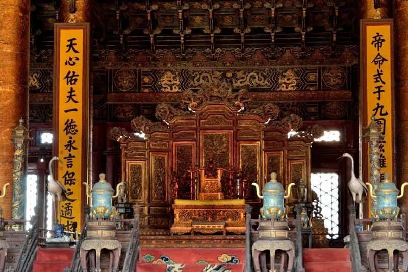
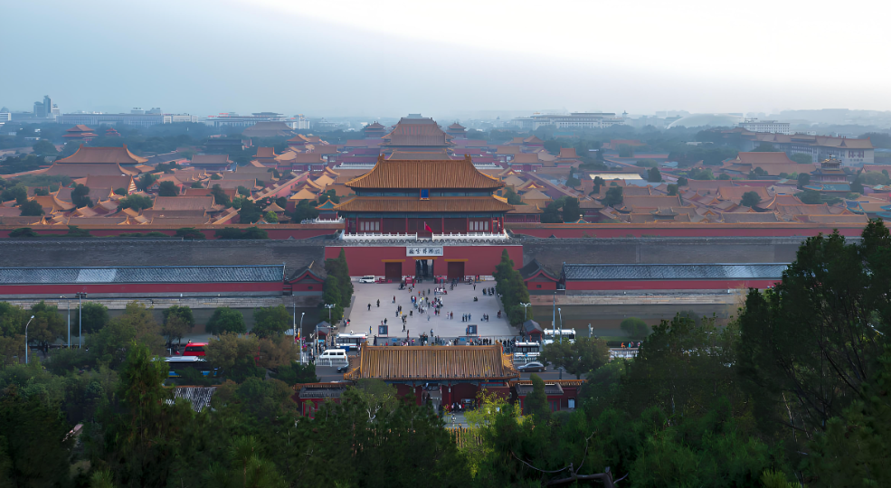
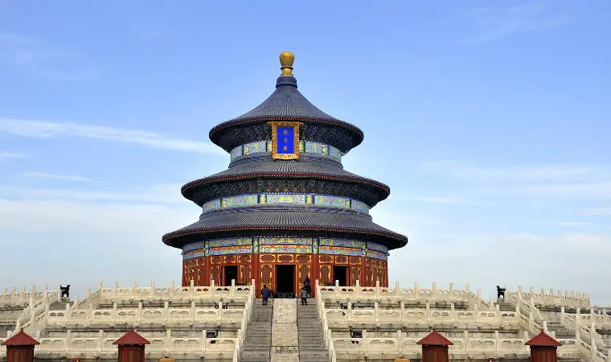

北京で絶対に訪れる観光地！
北京のおさえておくべき人気観光スポット・名所をご紹介！中国の歴史や文化を感じ
られる必見スポットや世界遺産
など、北京を知り尽くしたプロのクチコミを元に、厳
選した観光情報をまとめました。
紫禁城
故宮は風水でもっとも素晴らしい場所であり、中国の中心を意味している。明清時代に
用いられた皇帝の宮殿であて、
北京の故宮は南北の長さ961m、東西の幅753m、面積
72ha、980あまりの建物で構成されている。周囲は幅52m の水堀が囲む。
城壁の高さ
は12mで底厚10m、頂厚は6m から7m。南に午門、東に東華門、西に西華門、北に神
武門がある。
アクセス : 地下鉄1号線 天安門西駅
営業時間 : 8:30-17:00
定休日 : 月曜日
チケット : 約1000円
住所 : 北京市东城区景山前街4号
公式サイト : 故宮博物館
万里の長城

ここは北京のみならず、中国に来たならば一度は訪れてみたい場所。その名は万里の長城！
左（男坂）は坂が急になって
いて、距離は短めであり、右（女坂）は坂はそれほどではな
くて距離が長めという感じ。運動不足も解消され、最高の景色も
見れ、最高の旅になる。
アクセス : 北京北駅から車で約60分
営業時間 : 8:30-24:00
定休日 : お正月のみ
チケット : 800円
住所 :北京市延慶県八達嶺特区事務所
公式サイト : 長城
天壇公園
最も有名な祈念殿は天安門・紫禁城と並ぶ北京を象徴する観光スポットのひとつ。北京には
この時代の皇帝の祭祀建造物
が9箇所に存在し、その中でもここは“天”を祭った最重要地点。
1998年にはユネスコ世界文化遺産にも登録された。天壇の
北側は半円形で、南側が四角い
ことや、北を高く、南を低くすることで天地を表現している。この敷地全体で当時の中国の
宇宙観を表現していてとてもユニーク。
北京国家体育場

北京の陸上競技場、および中国最大級のスタジアム。2008年北京オリンピックおよび2022年北京
オリンピックのメインスタジアム
でもある。その独特の形状から愛称は「鳥の巣」である。大きさ
は330m×220mで、高さは69.2mもある。総工費は35億元。